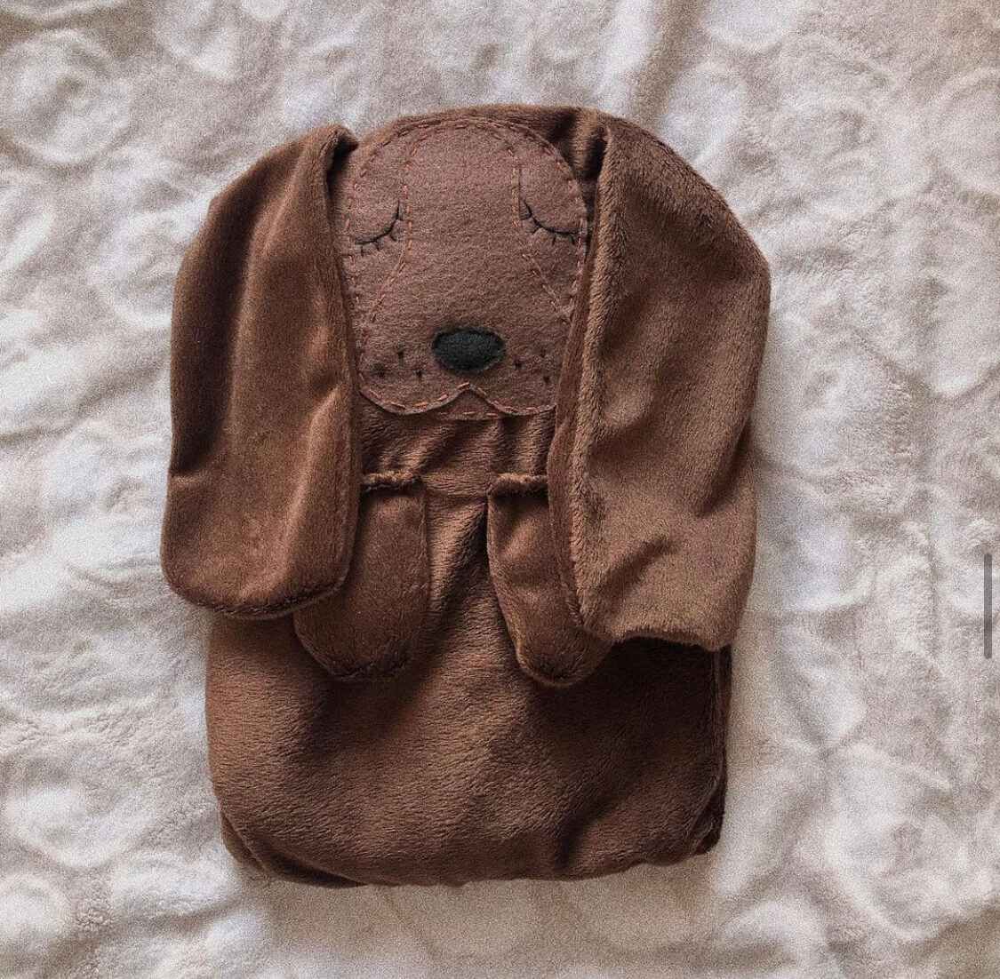
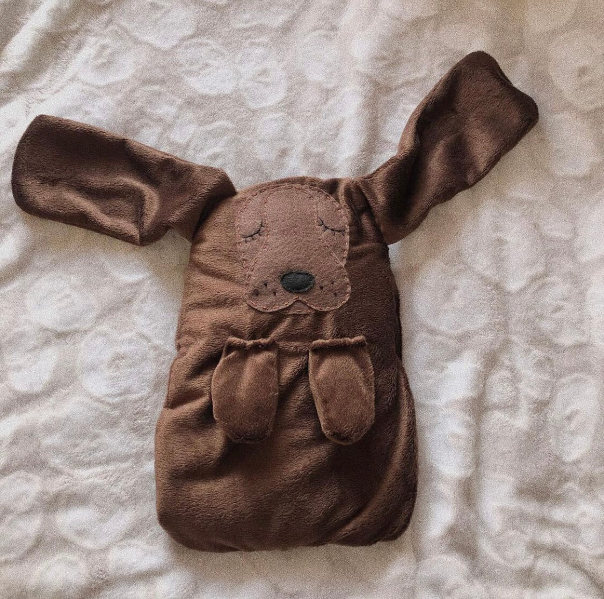

Instructions
Instuctions for your LittleLight Warmie: 1)How to warm up: Place your Littlelight warmie in the microwave for 3-4 minutes. You may remove the rice bag and warm it up separately and then place it in the outer cover. 2)How to cool: Place your LittleLight Warmies in the freezer for 30 minutes to an hour for best results. 3)How to wash: Remove the removeable rice bag from the outer cover. It is recommended to handwash the outercover with warm water and soap. Hang to dry. 4)How to Purchase: Once a month we do a drop. A drop is when all of the available products becomes available at a given time and date. We post our next drop information on our facebook and instragram pages. We also provide custom purchases. To learn more about custom purchases please contact us and let us know you want a costum. :) materials used: Minky, flannel, felt, white rice Caution: Do not put the LittleLight Warmie in the Microwave for more than 5 mins
 